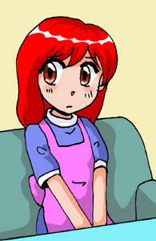
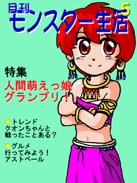

戻る
新米皇女の大冒険
(25) 新米皇女は新米支店長(終章・後編)
作：この市場
「わたしの声が聞こえるか？」
ここは、どこだろう？気が付くとクオンは、光だけの世界にいた。何も見えない。そして、その謎の声以外、何も聞こえない。
「聞こえるなら、答えるがよい。わが名はアスター」
「へぇ。太陽の神様？」
神様というと威厳のカケラもない女神様しか見たことがないクオンは、神様だからといって思わずひれ伏したりはしなかった。
その態度にアスターが苦笑しているのが、感覚としてわかる。
「ともかく、やっとわたしの後継者になれる人物が見つかって、こんなにうれしいことはない」
「それはよかったですね」
「・・・ひとごとじゃないぞ」
「いえ、ぼくもうれしいですよ」
「だから、ひとごとじゃないんだってば」
神様、ちょっと怒ってるみたいだけど。
「はい？」
話がかみ合ってない。
「と・に・か・く！キミにわたしの後継者になってほしいわけ！わかる！？」
あ。神様、キレそう。
「でも、ぼくの家って、太陽の神様とは血がつながっていないはずですが」
クオンだって、そのぐらいの知識はある。神様は血縁にしか神位を譲れない。そして、太陽の神の血筋はとっくに絶えている。
「ふふふふふ。そう来ると思った！しかし。しかしだよクオン君！盲点があったのだよ」
うってかわって、なんだか、すごくうれしそうな神様。
「なんと、魔王の血筋に、太陽神の血が残っていたんだねぇ」
「ま、魔王に？」
「そう。でも、さすがに連中を後継者にするわけにはいかないから困ってたんだ。そこに魔王の孫娘であるキミが生まれてきた。いやぁ。ぼくはうれしかったねぇ」
いつのまにか、自称が「わたし」から「ぼく」に替わっている。それにしてもこの兄ちゃん、もうちょっと神様らしく威厳のある話し方ができないものだろうか。
「で、後継者になる気、ない？便利だよ？今やってる戦いにも、すごく役に立つよ？」
「あっ。戦いは！？戦いはどうなってるんだ！？」
クオンの問いに答えるように、光の中に、ぼうっと戦闘シーンが浮かび上がってきた。
魔王グレンダルと、四天王とニルゼンたちの8人の、1人対8人の戦いはまだ続いていた。その映像がクオンの目の前に見える。
正確に言うと、すでに1人が1匹になって脱落していた。ファナールは魔導力を使い果たし、スライムの姿になっていたのだ。
すでに「大地の鈴」の効力はなくなり、魔王の容赦ない攻撃が8人に襲いかかっている。
「アル！ファナール！メア！・・・ニルゼン！」
クオンの体とエリオン3世を守っているナイベルも見えた。よく見ると、髪の毛が栗色に変わっている。
「ナイベルちゃん、人間に戻ったんだ」
「えっ」
神の地位を人に譲った神は、そのまま「天上神」として永遠に生きるか、「人」に戻るかを選べる。ナイベルは、短命な「人」としての人生を選択したのだ。
「なぜ？」
クオンが聞く。
「キミを守るために決まっているだろう。『神』ではキミを救うことはできない。『人』にならなければ、キミの体を守ることはできないんだ」
人に戻れば、ナイベルが「人」だった時に持っていた魔力は使える。神のままであれば、戦いに介入することはできない。選択の余地はなかったのだ。
ナイベルは今、「水の女神」としてではなく、ひとりの「魔法使い」としての力をふりしぼって、クオンと皇帝の前に魔力結界を張っていたのである。
「ちょっと、しんどい、ですね」
ぜぇぜぇ肩で息をしているニルゼン。「ちょっと」というレベルでないのは見ればわかる。
「フッ。キミが倒れたら、クオンさんはぼくがいただきます。安心して逝ってしまってください」
「ウェイルン！」
怒りかけたニルゼンだったが、ウェイルンの言葉が彼なりの励ましだと気付いた。
「姫は、私が」
それだけ言うと、ニルゼンはふたたび風の矢を放ち始める。ウェイルンは、その風の矢をさらに加速させるべく、風をおこす。風と風の合体攻撃だ。
同じように、アルダールとフラーファも炎と炎を足し合わせて、共同で攻撃をし始めている。
もちろん、メアレインとビスマも、しっかり協力している。違う種類の力同士で協力するより、同じ種類の力が協力した方が威力は大きくなるのだ。
なお、「地」の力を持つファナールが早々と戦線を離脱しており、「地の巨人」ゴウラは協力相手がいないため、もっぱら防御役に徹していた。
今までの段階では、戦いは一見互角に見えていたが、ファナールの次にナイベルも限界に近付いていた。ナイベルが「人」として魔法を使うことなど、何百年ぶりだろうか。やはり「神」とは違う。人は限界がある存在なのだ。
「勇者様！ごめんなさい！わたくし、もう、ダメですぅ〜」
という悲鳴のような声とともにナイベルの魔導力が、ついに尽きた。力がなくなるという喪失感。これが「人」の力の限界なのか。
魔力結界が消えたに気付いたゴウラが、すぐにナイベルたちの前に立ちふさがってくれた。そして、魔王の攻撃をすべて受け止める。さすが「地の巨人」。とんでもない防御力だ。
しかし、ゴウラの体は、見るからにボロボロになっている。
ずしん、と音を立てて、座りこむゴウラ。もはや動くことはできなくなり、座ったまま、その巨体で背後のナイベルやクオンを守ろうとしているのだ。
「マダか？」
ゴウラが聞く。
「はい」
ナイベルがうなずく。クオンはまだか、とゴウラは聞いているのだ。クオンが伝説の「白き光の皇女」なら・・・。
「ほっほう！『地の巨人』は動けなくなったか。ならば！」
魔王の手に雷の力が集まる。雷の力を拡散させ、広範囲からゴウラの背後を攻撃しようとしているのだ。ゴウラは正面からの攻撃しか受け止められない。それでも両手をいっぱいに伸ばすゴウラ。
バチバチと光る魔王の右手。
「させません！」
魔王の意図に気付き、風の矢を放つニルゼン。
「うるさい！」
カッ！
魔王は、今まさに放とうとしていた雷撃を、ニルゼンに集中させた。
ドォーーーーーン！！
ニルゼンは、これをまともに食らう。魔法防御はしているが、それでも直撃はきつい。
白い神官装束は燃えて黒くなっているが、ニルゼンは倒れない。そのまま魔王に向って駆けていく。魔王はもう一度、ニルゼンに攻撃を集中した。
カッ！ドドォーーーーーン！！！
ニルゼンの足が止まった。そして、
「ひ・め・・・」
小さくつぶやくと、ゆっくり前のめりに倒れこむ。そこに、怒る魔王の攻撃が、さらにもう一撃。
カッ！
「やめろぉーーーーーっ！」
その叫び声に、魔王は思わず手を止めた。
目を閉じてまったく動かなくなってしまったゴウラの後から、誰かが出てくる。
小柄な美少女。体全体が、白く光り輝いている。髪も肌も、薄布でできた衣装も、すべて白く輝いている。背中には8枚の真っ白い羽。まるで伝説にあらわれる天使のようだった。
しかし顔を見ると、その正体がわかる。
クオンだった。
魔王の近くまで歩いて来ると、クオンは魔王の顔を見上げ、じろりとにらむ。
「そうか。そうなったか。覚悟はしたのだろうな？」
魔王の問いに、クオンはさらっと答える。
「もちろん。ぼくの命だけと引き換えなら、安いもんだよ」
「わかっているか？おまえが余に触れれば、たしかに余は滅びるが、おまえも同時に滅びるのだぞ？」
「そして、神々の時代も終わるんだ、太陽神アスターがそう言ってた」
「そうか。あいつがな」
魔王グレンダルは、力なく笑う。
「神々の黄昏か。もう、俺たちの時代じゃあ、ないのかな」
しばらくの沈黙。
クオンは無言のまま、グレンダルに右手を差し出す。
魔王がそれに触れた瞬間、二人は消滅するのだ。
自嘲気味に笑い、あきらめたように、ゆっくり自分の右手を出す「異界の魔王」グレンダル。
誰も何も言わない。もはや、このふたり以外には、できることはなにもないのだ。
「そうだ」
手と手が触れ合う前に、クオンが何かを思いついたらしい。
「預金しませんか？いい定期預金があるんですよ」
悲壮な表情をしていた人々だったが、この瞬間、みんな目が点になっていた。
「ふむ。100万バイルで1年定期だと、金利は？」
魔王もさすがに大物。動じないで応じる。
「そうですねぇ。100万バイルだと6％出せると思いますよ。いちおう支店長の決裁がいりますけど」
「ならば、異界銀行の預金を回す。それでいいだろう？」
「ありがとうございます。今後ともごひいきに」
魔王グレンダルは、手を引っ込めて、くるっと後ろを向いた。
「余は異界に戻る。異界銀行の定期を解約して、送金しなければならないのでな」
「じゃあ、タンバート銀行本店に送金してくださいね。通帳は郵送でいいですか？」
「カイムダルは、北の城に閉じこめただけだから、通帳の郵送先は、あいつに聞いてくれ」
北の城というのは、大陸の北西端にある、カイムダルの本来の本拠地だ。
「はい！」
その背中にお辞儀をしながら、明るく笑顔で答えるクオン。
それを確認すると、魔王は闇の中に溶け込んでいった。
魔王が消えると、クオンは倒れたままのニルゼンのところに駆け寄った。
だが、確かめるまでもなく、ニルゼンは・・・すでに息絶えていた。神の力を得たクオンは、そんなことはわかっている。
それでもクオンは、ニルゼンの上半身を優しく抱き起こした。
「メア、魔王さんの預金の件、銀行に伝えといてね」
「は、はいっ」
あわてて返事をするメアレイン。
「今のぼくは神様だ。神様は自分の命と引き換えに、奇蹟を起こすことができるんだよ」
物言わぬニルゼンの唇に、自分の唇を近づけるクオン。
そして、そっと。本当にそっと。触れ合う唇。
ニルゼンの体が、白く光った。
その光は、ますます強くなり、誰も目をあけてはいられなくなった。
「姫？」
ニルゼンが目覚めた時、目の前にクオンの顔があった。しかし、クオンの目は閉じられている。
はね起きるニルゼン。と、同時に、クオンの頭が力なくニルゼンの胸に倒れこむ。
もはや、クオンは白く輝いてはいなかった。背中の羽も消えていた。服装だけは、神様の時のまま。
「ま、まさか」
ニルゼンの顔が蒼白になる。
「まさか私を救うために！？」
そこまでにしておけば感動的な場面なのに、いつものクセで余分な下ネタを付け加えてしまうニルゼン。
「まだ一度も私と、肌と肌の温もりを感じあっていないのに！」
「誰の肌の温もりだっ！だいたいっ！どこを触ってるぅーっ！？」
ばちーーーーーんというハデな音が鳴った。
目覚めたクオンが、いきなりニルゼンに平手打ちをぶちかましていたのだ。
頬を赤くしたまま、ニルゼンが答える。「どこを触ってる」の回答だ。
「いえ。姫が亡くなられたのであれば、私も後を追おうと」
「で？」
ニルゼンの目の前に、ぐいっと顔を突き出すクオン。
「今生の思い出に、姫様のやわらかな胸をこの手に感じておきたかったので」
まだ続けるかニルゼン。これ以上クオンを怒らせてどうする。
クオンは、ばっと胸を両手でおおって、ニルゼンの額に頭突きを食らわした。
ごんっ！とかなり大きな音が響く。
そしてクオンは小さくつぶやいた。
「ばか」
エピローグ
人間の国々に侵攻していたモンスターたちは、潮が引くように引き上げていった。大陸の北部、つまりかつてのアストベール帝国が滅びる前の支配領域にまで撤退していったのだ。ビスマたち四天王も、カイムダルのいる北の城に戻っていった。
そうしてこの大陸に平和が戻って、およそ一年が過ぎた。
今、大陸の中央にあるアストベール盆地に、新しい国ができあがりつつある。その名を「アストベール王国」という。
初代国王はアルダール1世。即位と同時に、王妃にユイリを迎えた。お妃候補はたくさんいたのだが、今後も女装のままで押しとおすと宣言したら、他に誰も残らなかったらしい。双子姉妹のような、妙な夫婦のできあがりだった。
魔法使い自治区の総督にはファナールが就任。大陸で肩身の狭かった魔法使いたちが、ここに集まってきている。なお、総督補佐には魔法使いの長老であるセガルスが任じられていた。ファナールのお目付け役、兼、魔法使いたちの実際の取りまとめ役というところだろう。
「赤い疾風」バウクは城下町でレストランを開き、ジャド将軍は近衛隊長に就任、ミルバ神官長は再建された神殿の神官長。と、いう具合にどんどん人々が集まってきている。
そして、この国には大きな特徴があった。魔人、魔獣たちが自由に住むことができるのだ。人とモンスターの境界のない国。小さいけれども、この国は今、大陸でもっとも活気のある国になっていた。
城から東西南北に伸びる大通りは、舗装工事が進んでいる。「地の巨人」ゴウラが、ゴーレムたちを指揮して石や土を運んでいるから、工事の進捗はなかなか早い。
建設中の南大通りに面してたタンバート銀行のアストベール支店もまた建築中だったが、出来あがっている部分で仮営業を開始している。
「おーい！支店長！お客だぞー！？」
そう奥に声をかけたのは、タンバート銀行頭取のエリオンだった。そう。もちろん皇帝陛下エリオン3世その人だ。以前から銀行の頭取と皇帝を兼務していたのだが、もう「皇帝」という時代でもなかろうと、さっさと退位して帝国を終焉させてしまった。今は、アストベールに出張してきて仮の受付係をかってでている。
「はーい」
料理の途中だったのか、エプロンを付けたままの少女が、とことこと走って来た。ずいぶん若い支店長だ。
仮に作られた応接室に、その客は通されている。
「お待たせしましたっ！って、なんだ。ウェイルンか」
「なんだとはつれない。あの時のことは何回も謝ったでしょう？」
花束をかかえたままの「風の使者」ウェイルンは、そう言って苦笑する。
「開店したと聞きましたので、代表でとりいそぎお祝いに駆けつけたのですよ」
ウェイルンは人間の住む街が好きらしく、北の城に閉じこもっていてはおもしろくないと、最近、この近くに酒場を開いていた。口がうまいせいもあって、なかなか客の入りもいいらしい。
「まぁ、座れよ」
そう言われて、ウェイルンは花束を机の上に置いてソファに座った。
その向い側に、エプロンも外さずにどっかと座ったのは、支店長になったクオンだった。
髪がずいぶん伸びてきて、以前より女の子らしくなっている。エプロンの下もスカートだ。しかし、言葉づかいは相変わらず。ソファに座る時に足をちゃんと閉じているあたりが、進歩といえば進歩か。
「この花はぼくからですが、こちらは魔王様からです」
そう言ってウェイルンが机の上に置いたのは、小さな金色の置き時計だった。
「中古品をお祝いにするっていうのはどうかと思ったんですけど、それ、ジェンナ姫様が使っていた時計なんですよ」
「母様の・・・」
とんとん。と音がすると、入ってきたのはニルゼン。手に持ったお盆にお茶が載っている。
ニルゼンの服装はあいかわらずトンデモなかった。黒と黄色の縦じま模様の服に、両肩から下がる七色の布がひらひらと揺れている。胸のところには「愛」という言葉が赤で染め抜かれていた。こんな格好で銀行に勤務していいものだろうか？
「おお！ニルゼン君！元気そうで何よりです、あいかわらずですねぇ」
なぜだかウェイルンはニルゼンに親近感を持っているらしい。ニルゼンの方は、そうでもなさそうだが。
「夜の方はうまくいってますか？」
お茶を置くニルゼンに、ウェイルンは唐突に聞いた。
「夜って何？」
クオンが問い返した。
「いえ。夜の生活はいかがでしょうか、と」
「夜は寝るだろ？」
「ですよね。ニルゼン君といっしょに」
下ネタが好きなところがニルゼンと似ているウェイルン。
「うん。気持ちいいよな」
とクオン。

得たりとウェイルン、
「そうですか。気持ちいいのですね。ああ。うらやましい！」
「ニルゼンといっしょだと、ぐっすり寝られるんだ。だから、気持ちいいに決まってるじゃないか」
「はい？」
ウェイルンが、ニルゼンの顔を見る。ニルゼンは苦笑いしているだけ。
「そういうこと、なんですか？」
とウェイルン。
「そういうことです」
とニルゼンが答える。
「くっくっくっ・・・あっはっはっは！」
ウェイルンは笑いながら、クオンの横に座ったニルゼンの肩を、ばんばんと叩いた。
「どうです？今度、ぼくの店に飲みに来ませんか？その辺のやり方ってものをじっくりと教えて差しあげますよ。あはははは」
笑いつづけるウェイルンと、苦虫をかみつぶしたような顔のニルゼン。
「なんだよ。いったい」
ちょっと頬を赤くして、ぶすっとするクオン。どうやら彼らの好きな下ネタらしいということがわかったのだ。
「ふんっ」と怒ってから、お茶をずずずずずと音を立てて飲むクオン。クオンは行儀作法はけっこうきちんとしている方なので、もちろんわざとだ。
タンバート銀行アストベール支店は、まだ仮開店中だから、カウンターは2つしかない。そこにはふたりの女子行員が座って接客していた。
ふたりとも、長い髪を後のリボンでまとめている。髪の色は、ひとりは赤、もうひとりは栗色。「いらっしゃいませー」と言う時の笑顔がかわいいと評判だ。
1番カウンターがメアレイン、2番カウンターがナイベル。ナイベルの特徴的な水色の髪は、人に戻るとともに栗色になっていた。ナイベルから「水の女神」を受け継いで水色になっていたメアレインの髪の色も、元の赤毛に戻っている。
「なんだか、こういう生活って、張り合いがありますわね」
ナイベルがメアレインに話しかける。
「そうですね。とっても楽しいです」
メアレインもにっこり笑いながらそう答えた。
「あ、お客様ですわ」
ふたり声をそろえて、明るく挨拶をする。
「いらっしゃいませー」
「いらっしゃいませー」

ぐしゃっ！
金色の巨大なスライムが、クオンの剣の一撃で吹っ飛んだ。
「どうかな？」
「いやぁ。まいったスラ」
ゴールデングレートスライムは、のたのたとクオンのほうに這って来る。
「さすが、ウワサどおりに強いスラ。負けたスラ」
クオンはにっこり微笑んで、
「それでは預金、いいですか？」
「しょうがないスラ。1万バイル預金するスラ」
支店長になった今でも、クオンはこうやってモンスター相手の営業活動を続けている。
腕に覚えのあるモンスターたちが、おもしろ半分にクオンを呼びつけているせいもあるが。
「ありがとうございましたぁ」
思いっきりな笑顔のクオン。これがまた、モンスターの間で人気が出ている原因のひとつらしい。
「月刊モンスター生活」の先月号の特集「人間萌えっ娘グランプリ」で1位を取ってからは、さらにクオンの人気はうなぎのぼり。
しかし、そんなことになっているとは知らないクオン、営業活動が順調に行っていることを単純に喜んでいた。
去っていくゴールデングレートスライムを見送ったクオンは、コブシを上に突き上げて元気よく宣言する。
「さぁて！まだまだがんばるぞー！！」
そして、走り出すクオン。
◇◇◇完◇◇◇
後書き
というわけで、この市場です。
約半年間、26回のお付き合い、ありがとうございました。
文庫のご担当の方、ご感想を書いてくださった皆様、本当に感謝いたします。無事完結まで来れたのは、皆様のおかげです。
毎週1本で26本というテレビアニメのような無謀な計画を立てたのが半年前。前半はストックがあったのでなんとかなりましたが、後半はおおまかなプロットがあっただけ。しかもキャラがどんどん暴走するので、せっかく作ったプロットを変更せざるをえないこともしばしば。
われながら、ぴったり予定通りの26回で終わったのが不思議です。(笑)
では、ふたたびお目にかかる日を楽しみに、ひとまずお別れを申しあげます。
ありがとうございました。
（この市場）
戻る
□ 感想はこちらに □